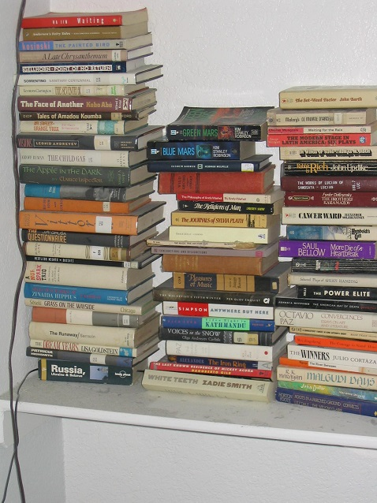

Physical Media In a Digital Age
I love physical media. Vinyl, books, video games, etc. even when a lot of people dismiss it. Even though consuming media digitally is generally cheaper and more accessible these days, I still think that there's something special about holding and preserving things you care about.

About the Author

Hi! I am Richard but I go by Ricky. I am a senior informatics major graduating in May. I am looking forward to creating a professional looking website by the end of the semester. I am interested in digital design and information systems. When I am not working on school I am listening to music, reading, or playing video games.